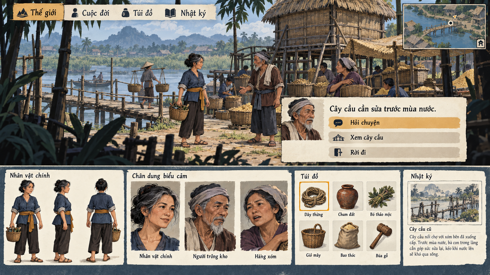

Thử 2.5D nhiều lớp, diện mạo 3D cách điệu, pixel và anime trên cùng tình huống chợ lương thực, kho cao và cây cầu trước mùa nước. Nhân vật minh họa chính là một phụ nữ lao động trưởng thành.
Bản concept tổng thể · UI trong ảnh là minh họa
BẢN THAM KHẢO ĐANG XEM
2.5D nhiều lớp

Thử không gian nhìn ngang bằng các lớp cảnh chồng nhau và nhân vật 2D. Quan sát lớp trước–sau, lối đi và độ đọc của người, chân dung và UI.
Đây là ảnh raster tạo riêng; UI trong board chỉ là minh họa. Chỉ nút xem ảnh trên trang có tương tác.
Chưa tải được ảnh. Kiểm tra thư mục assets của bản thử nghiệm 11.
Đang xem concept 2.5D nhiều lớp.
Đổi concept bằng bốn nút trên hoặc phím 1 / 2 / 3 / 4. Mở toàn khung hoặc PNG gốc để xem chữ và icon lớn hơn. Cỡ chữ trang xem không làm chữ trong ảnh reflow.
CẢNH / NHÂN VẬT / CHÂN DUNG / VẬT PHẨM / UI
Không gian có thể đi cùng nhiều nét vẽ.
2.5D và 3D nói về cách tổ chức không gian; pixel và anime nói về cách tạo hình. Chúng có thể kết hợp, không phải bốn lựa chọn công nghệ loại trừ nhau. Những bảng này là các tổ hợp để tham khảo.
Cùng tình huống không có nghĩa camera, bố cục, cast hoặc hình học khớp tuyệt đối giữa các ảnh. Các board không chứng minh parallax, camera tự do, animation hay quyết định chuyển engine.
KHÔNG GIAN / LỚP CẢNH VẼ TAY
2.5D nhiều lớp
Cảnh trước, đường đi và lớp hậu cảnh thử tạo chiều sâu bằng chồng lớp. Người và UI cùng đi theo ngôn ngữ tranh.
Muốn xem: Những lớp cảnh có giúp đọc hành động và lối đi, hay chỉ làm nền trang trí? Ảnh tĩnh chưa chứng minh parallax.
KHÔNG GIAN / THỂ TÍCH CÁCH ĐIỆU
3D cách điệu
Hình khối, mặt vật liệu và ánh sáng thử diễn tả thế giới cùng nhân vật có tuổi và công việc.
Muốn xem: Thể tích có làm tình huống rõ hơn? Chưa có kiểm chứng quay camera, rig, chuyển động hoặc hiệu năng.
TẠO HÌNH / CỤM ĐIỂM ẢNH
Pixel đời làng
Cảnh, người, icon và chữ thử cùng logic pixel để giữ sinh hoạt đời làng ở một mức giản lược.
Muốn xem: Pixel có nhất quán và còn đọc rõ người/vật khi thu nhỏ? PNG không tự là bộ asset đã chuẩn hóa.
TẠO HÌNH / NÉT VÀ MẢNG BÓNG
Anime đời thường
Cử chỉ, gương mặt và thiết kế trang phục thử đưa công việc, tuổi và cảm xúc vào ngôn ngữ hoạt hình.
Muốn xem: Cast trưởng thành có khác nhau về tuổi, dáng và biểu cảm? Chưa có animation hoặc trạng thái UI thực.
Thư viện tham khảo — mọi phiên bản được giữ lại
Bốn hướng này bổ sung thư viện, không tự thay thế hoặc đánh giá thấp những bản trước. Có thể quay lại, so sánh hoặc kết hợp các ý tưởng khi cần.